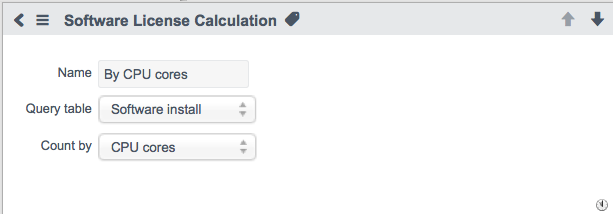
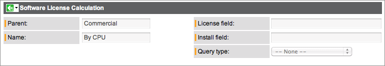
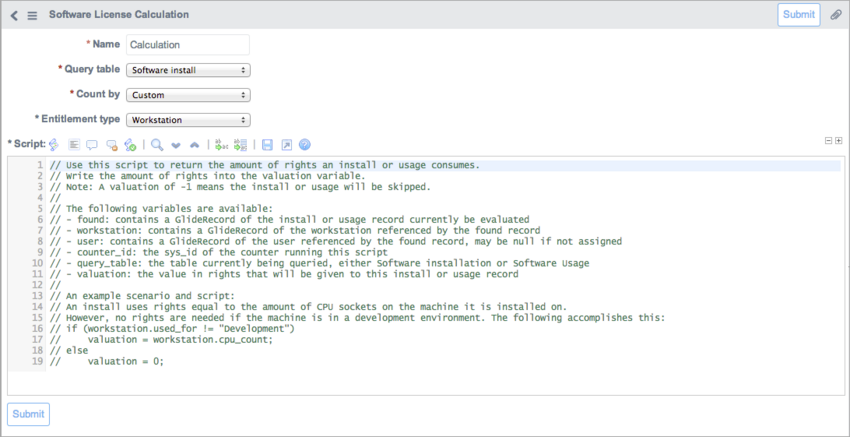

1 Overview
Software license calculations count the number of licenses that exist in your network environment. Users with the sam role can choose to count software licenses using a variety of license calculation types such as counting by the number of users, the number of workstations, the number of CPUs, and others. For example, you can count the number of Adobe Acrobat 9.0 licenses based on the number of users that have the software installed in the organization. The different license types that can be used are listed here.
2 Calculating Software Licenses
Software calculations use license calculation types to determine how software licenses are counted in your organization. You can use the default license types provided by ServiceNow or create new ones. To view the default types, navigate to Software Asset Management > Reconciliation > License Calculations and select a type. All fields in the default records are read-only.

| Field
|
Description
|
| Name
|
The name of the license type.
|
| Query table
|
The table that is being used for data. Possible values are Software install and Software usage.
|
| Count by
|
The method by which the license calculation type counts software licenses.
|
| Click the plus to view the procedure for versions prior to Eureka.
|
- Navigate to Asset Management > Software > License Calculations.
- Click an item in the Parent or Name column for detailed information (see table).
- All fields on the form are read-only.

| Field
|
Description
|
| Parent
|
Category of license calculation type.
|
| Name
|
License calculation type.
|
| License field
|
Field on the license that is counted.
|
| Install field
|
The multiplier for the installation.
|
| Query type
|
Process used for extracting data.
|
|
2.1 License Calculation Types
The following default license calculation types are available. These license types cannot be deleted.
| Category
|
License Type
|
| By CPU
|
- By CPU cores: The counter adds up the total license rights for all software license records of this model. The CPU core count field on the hardware configuration item determines the number of rights consumed by any software installation located on the configuration item. For that installation, the counter checks for a valid entitlement record on any of the software license records. Applies to software installation data and hardware configuration items.
- By number of CPUs: The counter adds up the total license rights for all software license records of this model. The CPU Count field on the hardware configuration item determines the number of rights consumed by any software installation located on the configuration item. For that installation, the counter checks for a valid entitlement record on any of the software license records. Applies to software installation data and hardware configuration items.
|
| By number of points
|
- Per installation - IBM PVU: The counter adds up the total license rights for all software license records of this model. The installation count for every hardware configuration item that has IBM PVU software is a point calculation. The CPU type determines the PVU per-core multiplier based on the IBM PVU Mapping table. The total number of cores on the configuration item is multiplied with this per-core multiplier to determine how many rights are used by an installation on this configuration item. For that installation, the counter checks for a valid entitlement record on any of the software license records. Applies to software installation data and hardware configuration items.
- This license type is present but does not work until the Software Asset Management IBM PVU Process Pack is active.
|
| By Client Access License (CAL)
|
- CAL (Device): The counter adds up the total license rights for all software license records of this model. Usage is counted as one installation for every unique configuration item (device). For each installation, the counter checks for a valid entitlement record on any of the software license records. The Software Usage [ast_usage] table is used for counting.
- CAL (User): The counter adds up the total license rights for all software license records of this model. Usage is counted as one installation for every unique user. For that installation, the counter checks for a valid entitlement record on any of the software license records. The Software Usage [ast_usage] table is used for counting. CAL (User) calculation type works in a similar way to the Oracle Named User and Named User Plus calculation types. For this calculation type to work, software usage records in the Software Usage (cmdb_sam_sw_usage) table must reference a target host configuration item with a metric type of CAL (User). This category and its license types are available starting with the Eureka release.
|
| By user
|
- Number of installs per user: The counter adds up the total license rights for all software license records of this model. It counts an installation when one software installation matches the discovery models that are mapped to this software model for any hardware used by a user. It counts up to the specified amount. For that installation, the counter checks for a valid entitlement record on any of the software license records. Applies to software installation data and hardware configuration items.
- Note:This license type is named By number of users in versions prior to the Fuji release.
- Per named user: The counter adds up the total license rights for all software license records of this model. It counts an installation when there is at least one software installation that matches the discovery models that are mapped to this software model for any hardware used by a unique user. For that installation, the counter checks for a valid entitlement record on any of the software license records. Applies to software installation data and hardware configuration items.
- No license needed (User): The counter adds up the total number of users of this model. It counts an installation when there is at least one software installation that matches the discovery models that are mapped to this software model for any hardware used by a unique user. It applies to software installation data and hardware configuration items. This license type is used for software installations where no license is required, such as open source applications. This license type is available starting with the Eureka release.
To compare Number of installs per user and Per named user:
- Number of installs per user assigns license cost based on installs per license. For example, UserA has three installs. One license is used by each install, for a total of three licenses.
- For Per named user, there is no install limit for a particular user. For example, UserB, who has three installs, needs only one license for the three installs.
|
| By utilization
|
- Usage (CPU): The counter adds up the total license rights for all software license records of this model. The counter looks at all of the software usage data mapped to any of the discovery model records of the counter's software model. It counts one installation for every unique configuration item. For that installation, the counter checks for a valid entitlement record on any of the software license records. Applies to software usage data.
- Usage (User): The counter adds up the total license rights for all software license records of this model. The counter looks at all of the software usage data mapped to any of the discovery model records of the counter's software model. It counts one installation for every unique user Accessed From hardware configuration item. For that installation, the counter checks for a valid entitlement record on any of the software license records. Applies to software usage data.
|
| By workstation
|
- Per workstation: The counter adds up the total number of license rights for all software license records of this model. It counts an installation when there is at least one software installation on a hardware configuration item that matches the discovery models that are mapped to this software model. For each installation, the counter checks for a valid entitlement record on any of the software license records. Applies to software installation data and hardware configuration items.
- No license needed (Workstation): This license type is used for software installations where no license is required, such as open source applications. This license type is available starting with the Eureka release.
|
| By Oracle install
|
- Oracle Named User: Oracle licensing scheme that counts by the number of unique users.
- Oracle Named User Plus: Oracle licensing scheme that counts by the number of unique users and accounts.
- Oracle Processor: Oracle licensing scheme that counts by the number of processors on a server.
This category and its license types are available when the Oracle Process Pack is activated, starting with the Eureka release.
|
3 Creating a Custom License Type
Custom license types allow you to create a license type with special conditions. A custom script can provide detailed information on the number of rights a software install or usage consumes. The ability to create custom license types is available starting with the Eureka release.
To create a custom calculation type:
- Navigate to Software Asset Management > Reconciliation > License Calculations.
- Click New.
- Fill in the fields, as appropriate (see table).
- Click Submit.
| Field
|
Description
|
| Name
|
Name of the software license type.
|
| Query table
|
The value that is used for queries. This can be either Software install to count the number of installations or Software usage to count the number of times the software is used.
|
| Count by
|
The method by which the license type counts software licenses. Make sure this value is set to Custom to create a new calculation type.
|
| Entitlement type
|
The entitlement type of the license, either Workstation or User. This field is available only when the Count by field is set to Custom.
|
| Script
|
The script used for custom calculation types. This field is available only when the Count by field is set to Custom.
|
3.1 Creating the Script
By default, the Script field in the Software License Calculation form contains information about available variables and an example script. You can use the example as the basis of the custom script or replace the example entirely.
You can use the following variables in the custom script.
- found: Contains a GlideRecord of the software install or software usage record currently being evaluated.
- workstation: Contains a GlideRecord of the workstation referenced by the found record.
- user: Contains a GlideRecord of the user referenced by the found record. Can be null if no user is assigned.
- counter_id: Contains the sys_id of the counter running the script.
- query_table: Identifies the table currently being queried, either Software Installation or Software Usage.
- valuation: Identifies the value in rights that is given to this software install or software usage record.
The following functions are available as part of the SAMUtil script include and can be used in custom scripts.
|
|
Note: All of these functions utilize and depend on the variables mentioned above.
|
- getWorkstationInstallsOrUsages: Returns a list of other installs on the given workstation.
- getUserInstallsOrUsages: Returns a list of all other installs belonging to the user.
- createCounterViolation: Returns insert a counter violation for the current counter with the given cause.
Example:
The following script uses the number of rights equal to the number of CPU sockets on the machine the script is installed on. The workstation variable is used to identify any workstation that is in the development environment. If such a workstation is found, the script then assigns a valuation equal to the number of CPU sockets on the machine. Otherwise, if the workstation is not in the development environment, then no rights are assigned.

Was this article helpful?
Yes, I found what I needed
No, I need more assistance

{kind=link}
{kind=link}
{kind=link}